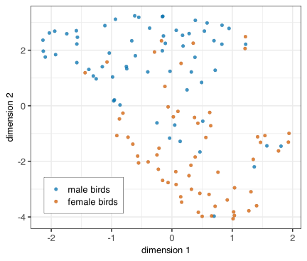

Dimension reduction 2
Claus O. Wilke
2025-05-31
What if a rotation cannot disentangle the data?
PCA analysis of intertwined spirals is not useful

One possible approach: Kernel PCA
- Kernel PCA performs PCA in a hypothetical, higher-dimensional space
- With more dimensions, data points become more separable
- Importantly, the space is never explicitly constructed (kernel trick)
- Results from kernel PCA depend on choice of kernel
Kernel PCA can separate the spirals

Gaussian kernel, sigma = 64
But we need to choose the right sigma value

Other approaches
- t-SNE: t-distributed stochastic neighbor embedding
- UMAP: Uniform manifold approximation and projection
Both algorithms look at the local distances between points in the original data space and try to reproduce them in the low-dimensional representation
t-SNE can separate the spirals

t-SNE results depend on the perplexity value

t-SNE results depend on the random starting point

UMAP can separate the spirals

UMAP results depend on the number of neighbors

Random starting point has some impact on results

(UMAP uses a different initialization than t-SNE, Kobak & Linderman, Nature Biotech 2021)
What is the meaning of the tuning parameters?
Tuning parameters define when points are close in the original data space
This implicitly defines the number of clusters generated
These have comparable effects:
- sigma (Gaussian kernel PCA)
- perplexity (t-SNE)
- number of neighbors (UMAP)
How do these methods perform
on the blue jays dataset?
UMAP of blue jays

UMAP of blue jays

Kernel PCA of blue jays

Nonlinear methods have important downsides
- Results depend on parameter fine tuning
- Low-dimensional embedding cannot be interpreted
(no rotation matrix plot)
Use with caution, and only when linear methods clearly aren’t working
Doing nonlinear dimension reduction in R
Getting the data
We’ll be working with the blue_jays dataset:
# A tibble: 123 × 8
bird_id sex bill_depth_mm bill_width_mm bill_length_mm head_length_mm
<chr> <chr> <dbl> <dbl> <dbl> <dbl>
1 0000-00000 M 8.26 9.21 25.9 56.6
2 1142-05901 M 8.54 8.76 25.0 56.4
3 1142-05905 M 8.39 8.78 26.1 57.3
4 1142-05907 F 7.78 9.3 23.5 53.8
5 1142-05909 M 8.71 9.84 25.5 57.3
6 1142-05911 F 7.28 9.3 22.2 52.2
7 1142-05912 M 8.74 9.28 25.4 57.1
8 1142-05914 M 8.72 9.94 30 60.7
9 1142-05917 F 8.2 9.01 22.8 52.8
10 1142-05920 F 7.67 9.31 24.6 54.9
# ℹ 113 more rows
# ℹ 2 more variables: body_mass_g <dbl>, skull_size_mm <dbl>Doing nonlinear dimension reduction in R
All these methods require special packages:
- kernlab (kernel PCA)
- Rtsne (t-SNE)
- umap (UMAP)
Code examples are somewhat messy
Will do t-SNE as an example
Doing t-SNE in R
# set random seed
set.seed(3482)
# run t-SNE
tsne_fit <- blue_jays |>
select(where(is.numeric)) |>
scale() |>
Rtsne(perplexity = 8)
# model fit object contains various pieces of information
names(tsne_fit) [1] "N" "Y" "costs"
[4] "itercosts" "origD" "perplexity"
[7] "theta" "max_iter" "stop_lying_iter"
[10] "mom_switch_iter" "momentum" "final_momentum"
[13] "eta" "exaggeration_factor"Doing t-SNE in R
[,1] [,2]
[1,] -1.35151022 16.0171255
[2,] -6.38003944 23.4335431
[3,] -2.41436032 20.0405001
[4,] 6.28730425 -19.3916453
[5,] -10.65885788 10.5774719
[6,] 8.99818448 -20.4131218
[7,] -9.31273644 5.3755674
[8,] -7.25654988 15.7132010
[9,] 6.74481665 -23.7464307
[10,] 1.27226454 -11.3933562
[11,] -8.10967967 23.7301219
[12,] 11.37651563 -7.6423822
[13,] -13.04595468 2.5194354
[14,] 15.03025326 14.6148860
[15,] -13.64450956 18.2103340
[16,] 6.90810849 -26.5341776
[17,] 11.26613343 -6.1024744
[18,] -16.25809266 12.1275049
[19,] -8.74441862 21.8400261
[20,] -5.93137317 -0.9041384
[21,] -11.28718538 13.0005938
[22,] 8.51343609 -30.9750396
[23,] -9.92567365 13.8288257
[24,] 8.72112609 -10.3065246
[25,] -11.83830418 5.9233754
[26,] -2.06950719 4.2670455
[27,] -11.07278221 -2.5710372
[28,] 6.65586113 -10.8649903
[29,] -15.82978852 5.9949983
[30,] 0.32528353 15.5410251
[31,] 12.04517467 -29.1169657
[32,] 2.54808748 14.3788814
[33,] -0.40434713 9.8045764
[34,] 1.31458713 -3.2200280
[35,] 12.80511247 11.6905636
[36,] -3.45964136 11.6421591
[37,] -4.90492627 24.8945733
[38,] 13.79168285 10.7468991
[39,] 8.79449595 -16.6237071
[40,] -17.63927800 2.3142518
[41,] 5.02287576 -25.4805579
[42,] 7.45160091 -14.2214890
[43,] -3.95527081 4.5930910
[44,] -7.99348678 20.3813197
[45,] 1.55025679 12.3853486
[46,] -8.20228962 22.3799729
[47,] -14.01509263 1.9623268
[48,] 6.82478348 -17.9605903
[49,] -1.08848740 22.2611209
[50,] 8.01368178 -26.0549148
[51,] 0.54242080 -5.2853639
[52,] -10.11680762 8.2921052
[53,] -4.61818190 14.1360227
[54,] 3.83225563 -24.3249597
[55,] 12.24683187 10.9430340
[56,] 8.52416101 -1.1040490
[57,] -6.12706756 24.5883509
[58,] -2.85422340 18.9829203
[59,] -14.36662966 17.4809729
[60,] 12.16520613 -9.1434243
[61,] -12.00223356 10.3148413
[62,] -7.55487764 5.6428510
[63,] 7.46887021 -24.9469847
[64,] 10.70726730 -4.9636965
[65,] -9.71080279 10.3400137
[66,] 10.62927989 -29.2194811
[67,] -16.57730949 5.4800433
[68,] -16.50241893 2.9636419
[69,] -7.04207831 -1.3413458
[70,] 9.20326368 -17.6407032
[71,] -5.35723549 1.3588363
[72,] 5.85652190 -14.6636706
[73,] 4.75628917 -6.0558216
[74,] -15.65311924 12.7620499
[75,] 9.75199542 -2.3909995
[76,] 2.23275182 -1.9913967
[77,] -9.24320404 8.2860113
[78,] 1.28023297 -4.7899444
[79,] 7.32449916 -28.3930435
[80,] -7.91761922 8.7926482
[81,] -1.77976277 22.9138104
[82,] 8.36118531 3.1669471
[83,] 14.86350277 10.0337068
[84,] -6.58111775 9.6660722
[85,] 1.33405097 15.2631282
[86,] -6.11980123 4.3992863
[87,] 0.74890824 -10.6061564
[88,] 0.04058745 -8.1189103
[89,] 5.48671834 -3.9348831
[90,] 13.57909092 -13.1058299
[91,] 8.13840156 0.9707537
[92,] -13.76195207 15.8693190
[93,] -1.35948973 -8.3169556
[94,] 8.05159125 1.5796687
[95,] 7.14118351 -9.8044605
[96,] 7.70006228 -12.1358166
[97,] -5.34139444 14.9834510
[98,] 1.22934439 11.5884466
[99,] 7.49927889 -20.5528006
[100,] 15.47860204 14.3535335
[101,] 7.90802023 -31.4800496
[102,] 9.47620964 -25.2594596
[103,] -4.11678166 -0.0170017
[104,] 5.59160885 -13.7713633
[105,] 9.13824090 -9.2522350
[106,] -13.30911093 19.0631648
[107,] 3.21307540 -20.8686920
[108,] -2.68502288 14.2210364
[109,] 2.88147176 -23.6201737
[110,] -0.76330270 -4.5322009
[111,] 12.22843830 -5.0294023
[112,] -5.77495633 2.6796119
[113,] 12.39826074 12.9388409
[114,] 1.97818731 -0.1584058
[115,] -2.11397889 16.4620832
[116,] -12.03027253 5.1001295
[117,] 5.59991662 -6.8646572
[118,] -15.64803015 2.0676494
[119,] -12.09196324 3.0020558
[120,] -0.82467518 -6.8039250
[121,] 5.42527929 -19.6198276
[122,] 13.18484484 -11.7534649
[123,] 9.28002940 -27.4925770Doing t-SNE in R
# extract coordinates from the `tsne_fit` object and plot
tsne_fit$Y |>
as.data.frame() |>
# put non-numeric data columns back into the dataset
cbind(select(blue_jays, -where(is.numeric))) V1 V2 bird_id sex
1 -1.35151022 16.0171255 0000-00000 M
2 -6.38003944 23.4335431 1142-05901 M
3 -2.41436032 20.0405001 1142-05905 M
4 6.28730425 -19.3916453 1142-05907 F
5 -10.65885788 10.5774719 1142-05909 M
6 8.99818448 -20.4131218 1142-05911 F
7 -9.31273644 5.3755674 1142-05912 M
8 -7.25654988 15.7132010 1142-05914 M
9 6.74481665 -23.7464307 1142-05917 F
10 1.27226454 -11.3933562 1142-05920 F
11 -8.10967967 23.7301219 1142-05930 M
12 11.37651563 -7.6423822 1142-05941 F
13 -13.04595468 2.5194354 1142-05957 M
14 15.03025326 14.6148860 1142-05971 F
15 -13.64450956 18.2103340 1142-05981 M
16 6.90810849 -26.5341776 1142-05986 F
17 11.26613343 -6.1024744 1142-05990 F
18 -16.25809266 12.1275049 1142-05991 M
19 -8.74441862 21.8400261 1142-05995 M
20 -5.93137317 -0.9041384 1142-05996 M
21 -11.28718538 13.0005938 1142-05997 M
22 8.51343609 -30.9750396 1142-05998 M
23 -9.92567365 13.8288257 1142-05999 M
24 8.72112609 -10.3065246 702-90556 F
25 -11.83830418 5.9233754 702-90560 M
26 -2.06950719 4.2670455 702-90567 F
27 -11.07278221 -2.5710372 702-90576 F
28 6.65586113 -10.8649903 702-90577 F
29 -15.82978852 5.9949983 702-90578 M
30 0.32528353 15.5410251 702-90583 F
31 12.04517467 -29.1169657 872-94671 F
32 2.54808748 14.3788814 872-94673 M
33 -0.40434713 9.8045764 872-94684 F
34 1.31458713 -3.2200280 872-94688 F
35 12.80511247 11.6905636 872-94689 M
36 -3.45964136 11.6421591 872-94692 M
37 -4.90492627 24.8945733 872-94694 M
38 13.79168285 10.7468991 872-94698 M
39 8.79449595 -16.6237071 872-94709 F
40 -17.63927800 2.3142518 872-94716 F
41 5.02287576 -25.4805579 872-94731 M
42 7.45160091 -14.2214890 872-94737 F
43 -3.95527081 4.5930910 872-94757 M
44 -7.99348678 20.3813197 872-94761 M
45 1.55025679 12.3853486 872-94766 F
46 -8.20228962 22.3799729 872-94769 M
47 -14.01509263 1.9623268 872-94771 M
48 6.82478348 -17.9605903 872-94776 F
49 -1.08848740 22.2611209 872-94777 M
50 8.01368178 -26.0549148 872-94779 F
51 0.54242080 -5.2853639 872-94780 F
52 -10.11680762 8.2921052 952-00002 F
53 -4.61818190 14.1360227 952-00004 M
54 3.83225563 -24.3249597 952-00006 F
55 12.24683187 10.9430340 952-00007 F
56 8.52416101 -1.1040490 952-00012 F
57 -6.12706756 24.5883509 952-00013 M
58 -2.85422340 18.9829203 952-00016 M
59 -14.36662966 17.4809729 952-00020 M
60 12.16520613 -9.1434243 952-00023 M
61 -12.00223356 10.3148413 952-00026 M
62 -7.55487764 5.6428510 952-00056 M
63 7.46887021 -24.9469847 952-00057 F
64 10.70726730 -4.9636965 952-00058 F
65 -9.71080279 10.3400137 952-00059 M
66 10.62927989 -29.2194811 952-00062 F
67 -16.57730949 5.4800433 952-00063 M
68 -16.50241893 2.9636419 952-00064 M
69 -7.04207831 -1.3413458 952-00065 M
70 9.20326368 -17.6407032 952-00066 F
71 -5.35723549 1.3588363 952-00068 M
72 5.85652190 -14.6636706 952-00069 F
73 4.75628917 -6.0558216 952-00070 M
74 -15.65311924 12.7620499 952-00071 M
75 9.75199542 -2.3909995 952-00072 F
76 2.23275182 -1.9913967 952-00073 F
77 -9.24320404 8.2860113 952-00074 M
78 1.28023297 -4.7899444 952-00076 M
79 7.32449916 -28.3930435 952-00077 F
80 -7.91761922 8.7926482 952-00078 M
81 -1.77976277 22.9138104 952-00079 M
82 8.36118531 3.1669471 952-00080 M
83 14.86350277 10.0337068 952-00081 F
84 -6.58111775 9.6660722 952-00084 F
85 1.33405097 15.2631282 962-62003 M
86 -6.11980123 4.3992863 962-62006 M
87 0.74890824 -10.6061564 962-62007 F
88 0.04058745 -8.1189103 962-62008 F
89 5.48671834 -3.9348831 962-62019 M
90 13.57909092 -13.1058299 962-62021 F
91 8.13840156 0.9707537 962-62024 M
92 -13.76195207 15.8693190 962-62025 M
93 -1.35948973 -8.3169556 962-62026 F
94 8.05159125 1.5796687 962-62027 M
95 7.14118351 -9.8044605 962-62030 F
96 7.70006228 -12.1358166 962-62031 F
97 -5.34139444 14.9834510 962-62038 M
98 1.22934439 11.5884466 962-62040 M
99 7.49927889 -20.5528006 962-62041 F
100 15.47860204 14.3535335 962-62043 F
101 7.90802023 -31.4800496 962-62045 F
102 9.47620964 -25.2594596 962-62046 F
103 -4.11678166 -0.0170017 962-62063 M
104 5.59160885 -13.7713633 962-62067 F
105 9.13824090 -9.2522350 962-62068 F
106 -13.30911093 19.0631648 962-62069 M
107 3.21307540 -20.8686920 962-62070 F
108 -2.68502288 14.2210364 962-62081 M
109 2.88147176 -23.6201737 962-62088 F
110 -0.76330270 -4.5322009 962-62089 F
111 12.22843830 -5.0294023 962-62090 F
112 -5.77495633 2.6796119 962-62099 F
113 12.39826074 12.9388409 962-62104 F
114 1.97818731 -0.1584058 962-62115 F
115 -2.11397889 16.4620832 962-62117 M
116 -12.03027253 5.1001295 962-62123 M
117 5.59991662 -6.8646572 962-62127 M
118 -15.64803015 2.0676494 962-62138 F
119 -12.09196324 3.0020558 962-62176 M
120 -0.82467518 -6.8039250 962-62181 M
121 5.42527929 -19.6198276 962-62184 F
122 13.18484484 -11.7534649 962-62185 F
123 9.28002940 -27.4925770 962-62200 FDoing t-SNE in R

Further reading
- Wikipedia: Nonlinear dimensionality reduction
- Wikipedia: t-distributed stochastic neighbor embedding
- Wikipedia: Kernel principal component analysis
- kernlab reference documentation (for kernel PCA): pdf document
- Rtsne reference documentation: pdf document
- umap vignette: Uniform Manifold Approximation and Projection in R